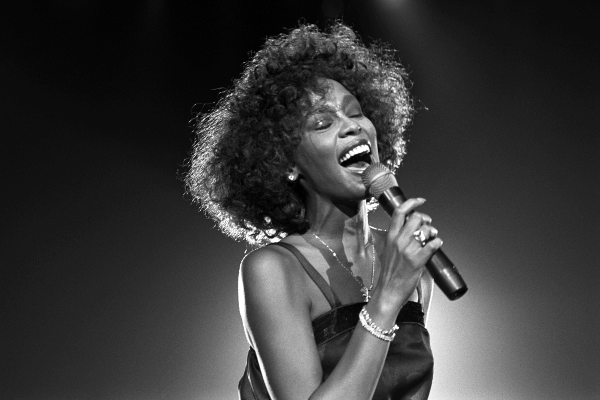

Whitney Houston

Whitney Houston singing live
Timeline of Whitney Houston's Life
- 1963: Born in Newark, New Jersey
- 1978: At 15, began performing with her mother, an American gospel singer
- 1981: While modeling, became the second African American woman on the cover of Seventeen magazine
- 1982: DIscovered in a nightclub by Arista Records' Clivd Davis
- 1983: Debuted on National Television on the Merv Griffin Show singing "Home" from The Wiz
- 1985: Released debut album, Whitney Houston, an instant pop hit
- 1987: Released second album, Whitney, which went platinum and won a Grammy for the single "I Wanna Dance With Somebody (Who Loves Me)"
- 1992: Married R&B singer Bobby Brown. Addressed substance abuse issues in their relationship.
- 1992: Starred in The Bodyguard. Her single from the film, "I Will Always Love You", spent 14 weeks at #1 in the US
- 1995: Starred in Waiting to Exhale, and sang on the hit soundtrack
- 1996: Starred in The Preacher's Wife, and sang on the hit soundtrack
- 1998: Released My Love Is Your Love, her first non-soundtrack album in 11 years
- 2002: Infamous TV interview with Diane Sawyer addressing Whitney appearing in poor health. Releases another album, Just Whitney
- 2005: Has a lot of airtime in reality tv series, Being Bobby Brown
- 2006: Is named Most-Awarded Female Artist of all time by Guinness World Records.
- 2007: Divorces Bobby Brown and wins custody of their daughter, Bobbi Kristina
- 2007-2009: Recovering from addiction
- 2009: Releases album, I Look To You
- 2012: Dies at the age of 95. Official cause of death is accidental drowning with heart disease and cocaine listed as contributing factors.
Whitney Houston was a very talented singer and actress. Learn more about her here.